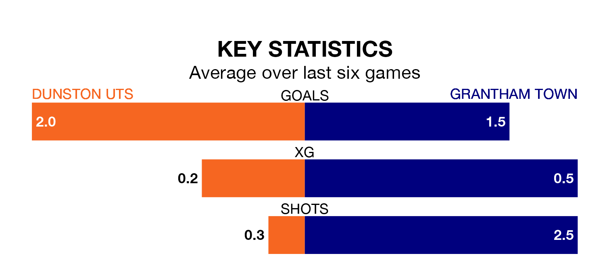

Dunston UTS are heavy favourites to keep all three points at home in Tuesday's late kick-off against Grantham Town.
Dunston UTS, who sit fifth in the Northern Premier League Division One East with 19 games played, are priced at 1.6 to seal victory.
Sitting 15 places and 21 points behind them in the table, Grantham are 4.5 to win with *Betting Company*, while the draw is at 3.6.
Dunston UTS are in fantastic form in the Northern Premier League Division One East, with five wins and a draw from their last six games.
With a win and two draws over that period, Grantham's form is much worse – they have taken five points from 18, compared to the hosts' 16.
With 36 goals in 19 games so far this season, Dunston UTS are scoring more than average in the league with 1.9 goals per game. And they are conceding fewer than average, letting in 18 goals at a rate of 0.9 per game.
Town, meanwhile, are below average scorers, with 1.5 goals per game, compared to a league average of 1.6. They have conceded 2.4 goals per game.
Over the last two years, Dunston UTS and Grantham have played each other twice. they drew both of them.
Their last meeting was on April 4, when they played out a 1-1 draw.
Dunston UTS's last match was on Saturday, a 0-0 draw against Stockton Town.
Grantham drew 2-2 with Bridlington Town last time out, also on Saturday.
Updated: 09:21 (UTC), 30/01/24